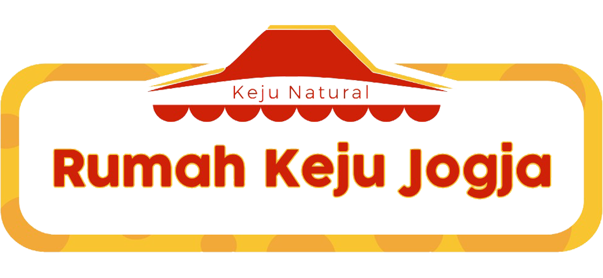

About Us

Rumah Keju Jogja didirikan pada 16 Februari 2018 sebagai komunitas kecil yang berfokus pada edukasi keju natural. Dibentuk oleh ibu rumah tangga yang ingin menyediakan makanan sehat dan terjangkau, terinspirasi oleh kesadaran akan rendahnya kandungan susu dalam keju olahan di pasaran (hanya 16%). Usaha ini didukung oleh ketersediaan susu sapi dan kambing berkualitas di Sleman, Jogja. Dengan ide dan energi dari Tuhan, Rumah Keju Jogja telah tumbuh, kini mempekerjakan beberapa karyawan harian sejak awal perjalanannya.